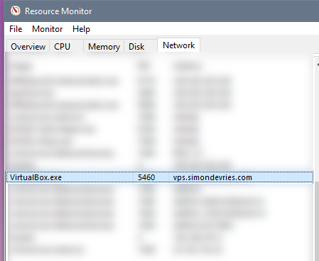

I use the Whonix Gateway Virtual Box on a Windows 10 host machine. When I start up the Vbox, I can see a strange network connection when I check the Windows Resource Monitor. The connection is going to:
vps.simondevries.com

This connection only ever appears after the Whonix Gateway has booted up. It never appears with any other Virtual Boxes I have running on this host. I have also previously used the Whonix Gateway and have never seen this connection.
I can find virtually no information on what this connection is, other than on a website named simondevries.com, which just seems to consist of only a strange javascript maze. The fact that I can find no information on it alarms me.
Is anyone able to shed any light on what this connection is, and why it occurs? Any help would be greatly appreciated.
Thanks!